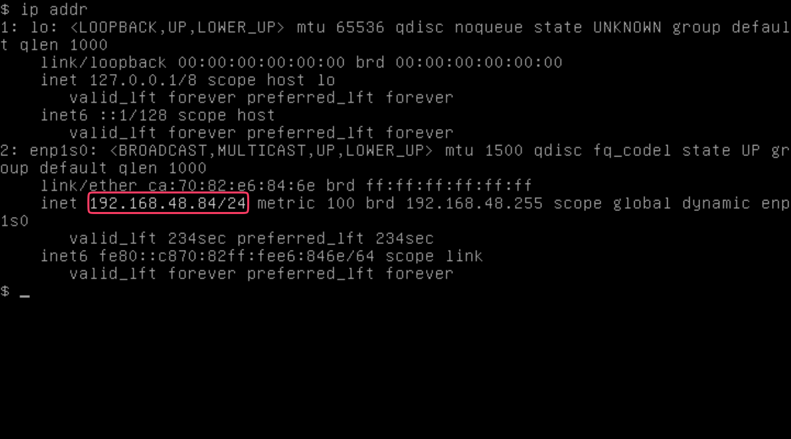

|
Este documento ha sido traducido utilizando tecnología de traducción automática. Si bien nos esforzamos por proporcionar traducciones precisas, no ofrecemos garantías sobre la integridad, precisión o confiabilidad del contenido traducido. En caso de discrepancia, la versión original en inglés prevalecerá y constituirá el texto autorizado. |
Controlador DHCP de VM (Experimental)
|
controlador-dhcp-vm-harvester es un complemento experimental. No está incluido en el ISO, pero puedes descargarlo desde el |
Puedes configurar la información del grupo de IP y servir direcciones IP a las VMs que se ejecutan en clústeres SUSE Virtualization utilizando la función de DHCP gestionado integrada. Esta función, que es una alternativa al servidor DHCP independiente, utiliza el vm-dhcp-controller complemento para simplificar el despliegue del clúster de invitados.
|
SUSE Virtualization utiliza la red de infraestructura planificada, por lo que debes asegurarte de que la conectividad de red esté disponible y planificar los grupos de IP con antelación. |
Características únicas
-
Los arrendamientos DHCP se almacenan en etcd como la única fuente de verdad en todo el clúster.
-
Cada uno de los arrendamientos es estático por naturaleza y funciona bien con tu infraestructura de red actual.
-
Los agentes de DHCP gestionado pueden seguir sirviendo solicitudes DHCP para entidades existentes incluso si el plano de control del clúster deja de funcionar, asegurando que la red de tu carga de trabajo de máquina virtual permanezca disponible.
limitaciones
-
La función de DHCP gestionado solo funciona con las interfaces de red especificadas en los
VirtualMachineCRs. Las interfaces de red creadas en la máquina virtual no son compatibles. -
Las direcciones IP no se asignan ni se desasignan cuando añades o eliminas interfaces de red después de que se crea la máquina virtual. Las direcciones MAC reales se registran en los
VirtualMachineNetworkConfigCRs. -
La operación DHCP RELEASE actualmente no es compatible.
-
Las actualizaciones de configuración del grupo de IP solo tienen efecto después de que reinicies manualmente los pods de agente relevantes.
Instalación y habilitación del complemento
Puedes instalar el complemento ejecutando el siguiente comando:
kubectl apply -f https://raw.githubusercontent.com/harvester/experimental-addons/main/harvester-vm-dhcp-controller/harvester-vm-dhcp-controller.yaml|
El complemento no puede detectar dinámicamente los CIDRs de servicio específicos del clúster y utiliza Cuando tu clúster utiliza un CIDR de servicio diferente, debes configurarlo explícitamente en la sección Ejemplo: Puedes comprobar el CIDR de servicio de tu clúster utilizando el siguiente comando: |
Después de la instalación, habilita el complemento en la pantalla Dashboard de la interfaz de usuario SUSE Virtualization o utilizando la herramienta shell kubectl.

Usando el complemento
-
En la pantalla Dashboard de la interfaz de usuario, crea una red de VM.

-
Crea un objeto
IPPoolutilizando la herramienta shell kubectl.cat <<EOF | kubectl apply -f - apiVersion: network.harvesterhci.io/v1alpha1 kind: IPPool metadata: name: net-48 namespace: default spec: ipv4Config: serverIP: 192.168.48.77 cidr: 192.168.48.0/24 pool: start: 192.168.48.81 end: 192.168.48.90 exclude: - 192.168.48.81 - 192.168.48.90 router: 192.168.48.1 dns: - 1.1.1.1 leaseTime: 300 networkName: default/net-48 EOF -
Crea una VM que esté conectada a la red de VM que creaste anteriormente.

-
Espera a que se cree el objeto
VirtualMachineNetworkConfigcorrespondiente y a que se aplique la dirección MAC de la interfaz de red de la VM al objeto. -
Comprueba el campo
.statusde los objetosIPPoolyVirtualMachineNetworkConfig, y verifica que la dirección IP esté asignada y asociada a la dirección MAC.$ kubectl get ippools.network net-48 -o yaml apiVersion: network.harvesterhci.io/v1alpha1 kind: IPPool metadata: creationTimestamp: "2024-02-15T13:17:21Z" finalizers: - wrangler.cattle.io/vm-dhcp-ippool-controller generation: 1 name: net-48 namespace: default resourceVersion: "826813" uid: 5efd44b7-3796-4f02-947e-3949cb4c8e3d spec: ipv4Config: cidr: 192.168.48.0/24 dns: - 1.1.1.1 leaseTime: 300 pool: end: 192.168.48.90 exclude: - 192.168.48.81 - 192.168.48.90 start: 192.168.48.81 router: 192.168.48.1 serverIP: 192.168.48.77 networkName: default/net-48 status: agentPodRef: name: default-net-48-agent namespace: harvester-system conditions: - lastUpdateTime: "2024-02-15T13:17:21Z" status: "True" type: Registered - lastUpdateTime: "2024-02-15T13:17:21Z" status: "True" type: CacheReady - lastUpdateTime: "2024-02-15T13:17:30Z" status: "True" type: AgentReady - lastUpdateTime: "2024-02-15T13:17:21Z" status: "False" type: Stopped ipv4: allocated: 192.168.48.81: EXCLUDED 192.168.48.84: ca:70:82:e6:84:6e 192.168.48.90: EXCLUDED available: 7 used: 1 lastUpdate: "2024-02-15T13:48:20Z"$ kubectl get virtualmachinenetworkconfigs.network test-vm -o yaml apiVersion: network.harvesterhci.io/v1alpha1 kind: VirtualMachineNetworkConfig metadata: creationTimestamp: "2024-02-15T13:48:02Z" finalizers: - wrangler.cattle.io/vm-dhcp-vmnetcfg-controller generation: 2 labels: harvesterhci.io/vmName: test-vm name: test-vm namespace: default ownerReferences: - apiVersion: kubevirt.io/v1 kind: VirtualMachine name: test-vm uid: a9f8ce12-fd6c-4bd2-b266-245d8e77dae3 resourceVersion: "826809" uid: 556440c7-eeeb-4daf-9c98-60ab39688ba8 spec: networkConfig: - macAddress: ca:70:82:e6:84:6e networkName: default/net-48 vmName: test-vm status: conditions: - lastUpdateTime: "2024-02-15T13:48:20Z" status: "True" type: Allocated - lastUpdateTime: "2024-02-15T13:48:02Z" status: "False" type: Disabled networkConfig: - allocatedIPAddress: 192.168.48.84 macAddress: ca:70:82:e6:84:6e networkName: default/net-48 state: Allocated -
Revisa la consola serie de la VM y verifica que la dirección IP esté configurada correctamente en la interfaz de red (a través de DHCP).

Pods y CRDs
Cuando el complemento está habilitado, se ejecutan los siguientes tipos de pods:
-
Controlador: Reconciliando objetos CRD para determinar la asignación y el mapeo entre direcciones IP y direcciones MAC. Los resultados se persisten en los objetos
IPPool. -
Webhook: Valida y muta objetos CRD al recibir solicitudes (creación, actualización y eliminación)
-
Agente: Atiende solicitudes DHCP y asegura que el almacén de arrendamientos DHCP interno esté actualizado. Esto se logra sincronizando el objeto
IPPoolespecífico con el que está asociado el agente. Los agentes se generan bajo demanda siempre que creas nuevos objetosIPPool.
El complemento introduce los siguientes nuevos CRDs:
-
IPPool(ippl) -
VirtualMachineNetworkConfig(vmnetcfg)
IPPool CRD
El IPPool CRD te permite definir información del grupo de IP. Debes mapear cada objeto IPPool a un objeto NetworkAttachmentDefinition (NAD) específico, que debe ser creado previamente.
|
Se utilizan múltiples CRDs llamados |
Ejemplo:
apiVersion: network.harvesterhci.io/v1alpha1
kind: IPPool
metadata:
name: example
namespace: default
spec:
ipv4Config:
serverIP: 192.168.100.2 # The DHCP server's IP address
cidr: 192.168.100.0/24 # The subnet information, must be in the CIDR form
pool:
start: 192.168.100.101
end: 192.168.100.200
exclude:
- 192.168.100.151
- 192.168.100.187
router: 192.168.100.1 # The default gateway, if any
dns:
- 1.1.1.1
domainName: example.com
domainSearch:
- example.com
ntp:
- pool.ntp.org
leaseTime: 300
networkName: default/example # The namespaced name of the NAD objectDespués de que se crea el objeto IPPool, el proceso de reconciliación del controlador inicializa el módulo de asignación de IP y genera el pod del agente para la red.
$ kubectl get ippools.network example
NAME NETWORK AVAILABLE USED REGISTERED CACHEREADY AGENTREADY
example default/example 98 0 True True TrueVirtualMachineNetworkConfig CRD
El VirtualMachineNetworkConfig CRD se asemeja a una solicitud de emisión de dirección IP y está asociado con objetos NetworkAttachmentDefinition (NAD).
Un objeto VirtualMachineNetworkConfig de ejemplo se ve como el siguiente:
apiVersion: network.harvesterhci.io/v1alpha1
kind: VirtualMachineNetworkConfig
metadata:
name: test-vm
namespace: default
spec:
networkConfig:
- macAddress: 22:37:37:82:93:7d
networkName: default/example
vmName: test-vmDespués de que se crea el objeto VirtualMachineNetworkConfig, el controlador intenta recuperar una lista de direcciones IP no utilizadas del módulo de asignación de IP para cada dirección MAC registrada. El mapeo IP-MAC se actualiza luego en el objeto VirtualMachineNetworkConfig y en los objetos IPPool correspondientes.
|
La creación manual de objetos |